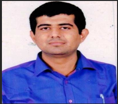
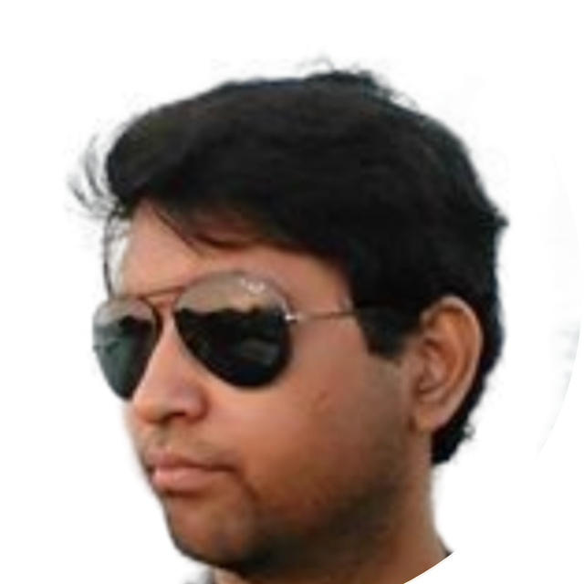
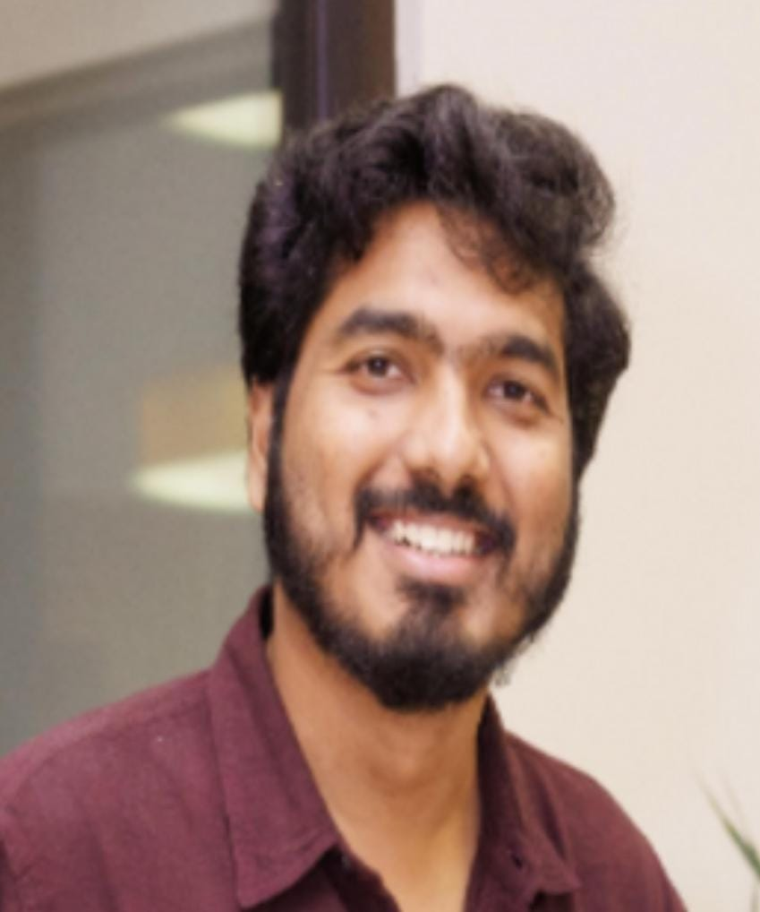
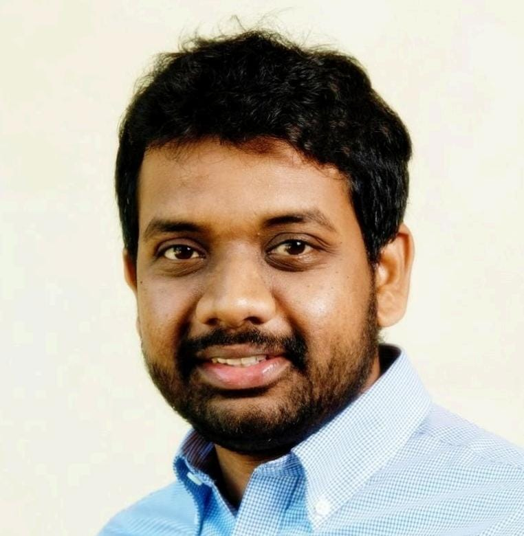
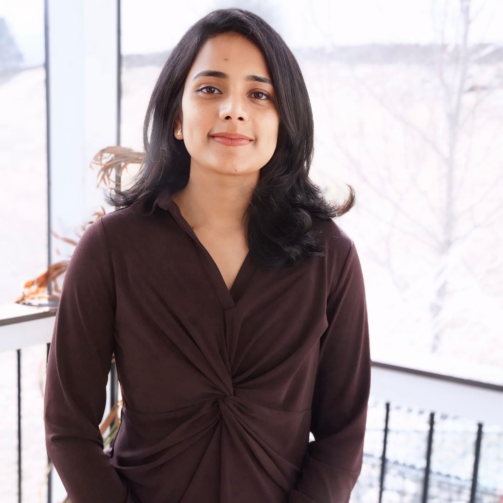
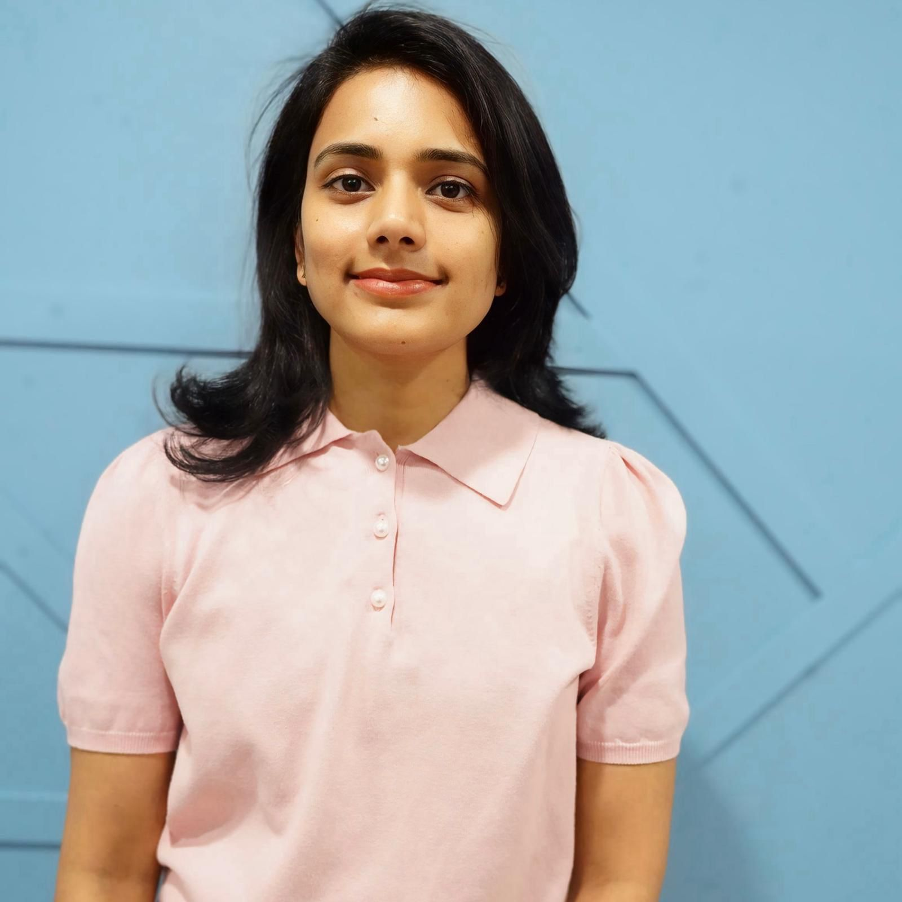
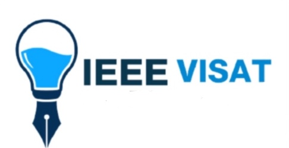

AI, Robotics & Biology-Inspired Technologies
Integration of artificial intelligence, robotics, and biology-inspired innovations in research and applications.
International Conference on Biological Sciences,AI,ML and Advanced Technologies
Join researchers, scientists, and experts from around the world to share latest research findings, innovations, and applications in biological sciences and advanced technologies.
The premier international conference bringing together experts in biological sciences and advanced technologies
The International Conference on Biological Sciences,AI,ML and Advanced Technologies (ICBAT 2026) brings together visionary minds from academia and industry to explore the latest breakthroughs and innovations shaping the future of life sciences and technology.
This interdisciplinary platform will delve into diverse topics such as biotechnology, genomics, biomedical engineering, environmental sciences, nanotechnology, artificial intelligence, machine learning, and synthetic biology — highlighting their impact on research, healthcare, and sustainability.
ICBAT 2026 offers invaluable opportunities for networking, collaboration, and the exchange of pioneering ideas among global scientists, researchers, and professionals.
All papers presented in the conference will be submitted for inclusion into the IEEE Xplore Digital Library. The proceedings will be indexed in Scopus.


Explore the diverse range of topics that will be covered at ICBAT 2026

Integration of artificial intelligence, robotics, and biology-inspired innovations in research and applications.
Exploring the latest advancements in biotechnology and their applications in medicine and healthcare.

Cutting-edge research in genomics, epigenetics, and their implications for personalized medicine.
Innovations in synthetic biology, genetic engineering, and their applications in various fields.

Research on environmental conservation, sustainability, and ecological balance.

Integration of AI, machine learning, and other advanced technologies in biological research.
Breakthroughs in CRISPR and other gene editing technologies and their therapeutic applications.
Advances in stem cell research and its potential for tissue regeneration and disease treatment.

Exploring the complex relationships between microbial communities and human health and disease.

Computational approaches to analyzing complex biological data and modeling biological systems.

Innovative imaging technologies and diagnostic tools for medical applications.

Ethical, legal, and social implications of biotechnological advancements.

Addressing global health challenges and emerging infectious diseases through biotechnology.
Celebrating excellence in biological sciences and advanced technologies


Acknowledging significant contributions to biological sciences and advanced technologies.
Learn More


Recognizing innovative applications of advanced technologies in biological sciences.
Learn More
Recognizing innovative research with potential for practical applications.
Learn More

Acknowledging significant contributions to biological sciences.
Learn More


Recognizing research with potential for practical applications.
Learn More


Recognizing innovative use of advanced technologies in research.
Learn More

Recognizing outstanding research by early-career researchers.
Learn More


Honoring significant contributions to biological sciences over a lifetime.
Learn More

Meet our distinguished speakers who are leaders in their fields

Assistant Professor (Senior Grade), School of Artificial Intelligence
Expert in bioinformatics and systems biology with research on HIV protease inhibitors and pharmacogenomics.
Dr. Harishchander Anandaram is a Assistant Professor (Senior Grade), School of Artificial Intelligence, Coimbatore. He completed his PhD in Bioengineering (2020), M.Tech. in Bioinformatics (2011), and B.Tech. in Bioinformatics (2009) from the Sathyabama Institute of Science and Technology, Chennai. His research includes analyzing resistance in HIV protease inhibitors through molecular mechanics and machine learning, and exploring pharmacogenomics and miRNA-regulated networks in psoriasis in collaboration with prestigious institutions like IIT Madras, Georgetown University, JIPMER, CIBA, and ILS. Dr. Anandaram has published extensively in international journals on bioinformatics and systems biology. His work earned him the “Young Scientist Award” from The Melinda Gates Foundation for his research on miRNA dynamics in infectious diseases. He has reviewed over 200 manuscripts in systems biology and is currently focused on predicting novel lead molecules and biomarkers to target inflammatory pathways in infectious and autoimmune disorders using computational techniques.

Research Technician, RIKEN Center for Brain Science, Japan
Specialist in neural calcium imaging and biologically inspired recurrent neural network decoders.
working with one-photon microendoscopic calcium imaging neural data from the rat’s brain. To process this complex, high-dimensional data, I have employed various computational methods and dimensionality reduction techniques to visualize and analyze it effectively. Additionally, I have modified autoencoder and tensor decomposition techniques to project high-dimensional neural calcium signal data into low-dimensional spaces, facilitating a better understanding of signal dynamics. I have also developed novel biologically inspired recurrent neural network (bRNN) decoders for neural calcium signals recorded from the rat’s ventromedial prefrontal cortex (vmPFC) during emotional memory tasks, such as rewarding and aversive extinction experiments. This new decoder enables accurate prediction of calcium activity changes observed during these experiments. Using the bRNN, I identified and characterized distinct neural subpopulation activities involved in the extinction process, uncovering their contributions to extinction learning. Furthermore, I predicted the effects of optogenetic perturbations on these neurons, offering insights into their roles in extinction behavior.

Professor, School of Engineering, IILM University
Expert in System-on-Chip Design for IoT, Artificial Intelligence, and Machine Learning with 67 research publications.
Prof. (Dr) Ipseeta Nanda is working as a professor at the School of Engineering and Engineering, IILM University, Greater Noida, UP, India. She has also been acting as an advisory board member at CloudSpital Pvt. Ltd. Noida, UP, India, and a board member at InternshipWALA. She did her doctorate at CAPGS, Biju Patnaik University of Technology, Rourkela, Odisha, India. Her area of research is System-on-Chip Design for the Internet of Things. Artificial Intelligence, Machine Learning, Automation Design, Data Science, etc. Her qualification includes BTech, MTech, MBA (HR & Data Analytics), PhD, and PDF. She has published 67 research papers in SCI, Scopus, and Web of Science in topmost journals and published papers in international conferences. She holds 28 granted patents and 10 copyrights in different fields of research. She has 19+ years of experience in teaching, research, and administration in many Engineering Colleges and Universities. She also worked as a Research Assistant in the Dept. of Microelectronics & Embedded Systems at the Asian Institute of Technology (AIT), Bangkok, Thailand in the year 2016. She acted as a Nodal officer for NAAC, NBA, QS Ranking, and NIRF ranking and trained many universities and colleges on Outcome-based Education (OBE). Presently, she is acting as the NEP-2020 coordinator. She has received two Best Paper Awards in the field of research work, one in Kuala Lumpur, Malaysia, and another one in Pune, Maharashtra, India, and recently in 2024, she received the Best Paper Trophy International Conference on Nailing Start-Up – Creating Tomorrow, at Garden College University, Bangalore. She is also acting as a Reviewer and editor in many International Journals, Plenary speaker, Invited Speaker, Guest of Honour etc., in many International Conferences and workshops. She is also acting as a reviewer in Wiley Publication, Bentham Books for the Internet of Things. Her name is also added to the top 100 professors by India Prime. She acted as a founding Dean in the Faculty of Information Technology & Engineering at Narayan Singh University, Jamuhar, Sasaram, Bihar, and worked on 7 pillars to build the foundation
Our dedicated team organizing this prestigious event
KCG College of Technology
VIVA College of Arts Commerce and Science, University of Mumbai
JECRC University, Jaipur
Rai School of Engineering, Rai University
ICFAI University
Bharati Vidyapeeth's College of Engineering, Delhi
KPR Institute of Engineering and Technology
B.S. Abdur Rahman Crescent Institute of Science and Technology
DPU - Pune
JSPM University, Pune
International School of Technology and Science for Women
Join us for this exciting conference
| Category | Non-IEEE Members | IEEE Members |
|---|---|---|
| INDIAN DELEGATES | ||
| Faculty/Academia/Industry (Presentation & Publication) | INR 27,999 | INR 25,999 |
| UG, PG Students / Research scholars (Presentation & Publication) | INR 24,999 | INR 23,499 |
| Faculty/Academia/Industry (Only attending) | INR 2,499 | INR 1,499 |
| UG, PG Students / Research (Only attending) | INR 1,499 | INR 999 |
| FOREIGN DELEGATES | ||
| Faculty/Academia/Industry (Presentation & Publication) | 350 $ | 320 $ |
| UG, PG Students / Research scholars (Presentation & Publication) | 300 $ | 275 $ |
| Faculty/Academia/Industry (Only attending) | 50 $ | 35 $ |
| UG, PG Students / Research (Only attending) | 30 $ | 20 $ |
Key benefits and achievements from ICBAT 2026
Sharing the latest research findings and technological innovations in biological sciences and advanced technologies with the global scientific community.
Facilitating meaningful exchange of ideas and fostering collaborations among researchers, academics, and industry professionals.
Identifying emerging trends and new opportunities that will shape the future of biological sciences and technological innovation.
Promoting cross-disciplinary research and innovative approaches that bridge biological sciences with advanced technologies.
Submit your research to be part of this prestigious conference
Download the official IEEE paper template to format your submission correctly.
Download IEEE TemplateAll accepted papers will appear in the official conference proceedings. Selected high-quality papers will be invited for publication in special issues of renowned SCOPUS INDEXED journals.
📧 Send abstracts and full-length papers at:
Info@igteu.in
See highlights from our previous conferences


Explore our successful conferences from previous years
The International Conference on Biological Sciences, Artificial Intelligence, Machine Learning, and Advanced Technologies (ICBAT 2024) was held on 1st and 2nd June 2024 and brought together visionary minds from academia, research institutions, and industry to explore groundbreaking innovations shaping the future of life sciences and advanced technologies.
The conference served as a robust interdisciplinary platform emphasizing the convergence of Artificial Intelligence, Robotics, and Biology-Inspired Technologies, highlighting how intelligent systems, automation, and bio-inspired innovations are transforming scientific research and real-world applications. Discussions underscored the growing role of AI-driven decision-making, robotic systems, and biologically inspired designs in accelerating discovery and innovation.
A major focus of ICBAT 2024 was Biotechnology and Biomedical Applications, where participants explored recent advancements in medical biotechnology, diagnostics, therapeutics, and healthcare solutions. These sessions demonstrated how biotechnological innovations are addressing complex medical challenges and improving patient outcomes.
The conference featured in-depth deliberations on Advanced Genomics and Epigenomics, showcasing cutting-edge research in genome sequencing, epigenetic regulation, and gene–environment interactions. The implications of these advances for personalized and precision medicine were extensively discussed, highlighting their potential to revolutionize disease prediction, prevention, and treatment.
Synthetic Biology and Bioengineering emerged as another key theme, with sessions focusing on genetic engineering, engineered biological systems, and novel bio-fabrication techniques. These innovations were presented as transformative tools with applications spanning healthcare, agriculture, environmental management, and industrial biotechnology.
Addressing environmental challenges, the conference included dedicated discussions on Environmental Science and Sustainability, emphasizing research on ecosystem conservation, climate resilience, and sustainable resource management. These sessions highlighted the critical role of biological sciences and technology in maintaining ecological balance and supporting sustainable development goals.
The integration of Advanced Technologies in Biological Research, particularly artificial intelligence and machine learning, was a central theme throughout the conference. Speakers demonstrated how computational intelligence, automation, and data-driven approaches are reshaping experimental design, biological modeling, and predictive analytics.
Significant attention was given to Gene Editing and Genome Engineering, with presentations on breakthroughs in CRISPR and next-generation editing tools. The therapeutic potential of these technologies for treating genetic disorders and complex diseases was explored alongside discussions on safety and regulation.
Sessions on Stem Cell Biology and Regenerative Medicine highlighted advances in tissue engineering, cellular therapies, and disease modeling. Researchers showcased the promise of stem cells in regenerative treatments and personalized therapeutic strategies.
The conference also explored the rapidly expanding field of the Microbiome and Human Health, examining the intricate relationships between microbial communities and human physiology, immunity, and disease. These discussions emphasized microbiome-based diagnostics and therapeutic interventions.
Recognizing the growing importance of data-driven science, ICBAT 2024 featured sessions on Biological Data Analysis and Computational Biology. Computational approaches for managing, analyzing, and modeling complex biological datasets were presented as essential tools for modern biological research.
Innovations in Biomedical Imaging and Diagnostics were also prominently featured, highlighting advanced imaging modalities, diagnostic technologies, and AI-assisted tools that are enhancing disease detection, monitoring, and clinical decision-making.
Beyond scientific and technological advancements, the conference addressed Biotechnology and Society, focusing on the ethical, legal, and social implications of emerging biotechnologies. Discussions emphasized responsible innovation, governance, and public engagement.
Finally, sessions on Global Health and Infectious Diseases examined how biotechnology and advanced technologies can address global health challenges, emerging pathogens, and pandemic preparedness, reinforcing the role of interdisciplinary collaboration in safeguarding public health.
Overall, ICBAT 2024 provided invaluable opportunities for networking, collaboration, and the exchange of pioneering ideas among global scientists, researchers, and professionals. The conference successfully fostered cross-disciplinary dialogue and contributed to advancing knowledge at the intersection of biology, technology, and society.





The International Conference on Biological Sciences, Artificial Intelligence, Machine Learning, and Advanced Technologies (ICBAT 2023) was held on 10th to 11th June 2023 successfully and brought together eminent researchers, academicians, scientists, and industry professionals from across the globe to deliberate on emerging trends and innovations shaping the future of life sciences and advanced technologies.
ICBAT 2023 served as a strong interdisciplinary platform emphasizing the convergence of Artificial Intelligence, Robotics, and Biology-Inspired Technologies, highlighting their growing integration in scientific research, healthcare solutions, and real-world applications. The conference showcased how intelligent systems and bio-inspired innovations are accelerating discovery and technological advancement.
A significant focus of the conference was on Biotechnology and Biomedical Applications, where recent advancements in medical biotechnology, diagnostics, therapeutics, and healthcare innovations were presented. These sessions demonstrated the critical role of biotechnology in addressing complex medical and societal challenges.
The conference featured advanced discussions on Genomics and Epigenomics, presenting cutting-edge research in genome analysis, epigenetic regulation, and gene–environment interactions. The implications of these advancements for personalized and precision medicine were highlighted as transformative pathways for future healthcare.
Synthetic Biology and Bioengineering formed another major thematic area, with sessions exploring innovations in genetic engineering, synthetic biological systems, and bio-fabrication technologies. These developments were presented as key drivers for progress across medicine, agriculture, environmental management, and industrial biotechnology.
Dedicated sessions on Environmental Science and Sustainability addressed critical issues related to environmental conservation, ecological balance, and sustainable development. Researchers emphasized the role of biological sciences and advanced technologies in mitigating environmental challenges and promoting long-term sustainability.
The integration of Advanced Technologies in Biological Research, particularly artificial intelligence and machine learning, was a recurring theme throughout the conference. Presentations highlighted the use of computational intelligence, automation, and data-driven approaches in biological modeling, predictive analytics, and experimental research.
Breakthroughs in Gene Editing and Genome Engineering, including CRISPR-based technologies, were extensively discussed. The sessions focused on therapeutic applications, regulatory considerations, and the future potential of gene-editing tools in treating genetic and complex diseases.
Advances in Stem Cell Biology and Regenerative Medicine were showcased, highlighting progress in tissue regeneration, disease modeling, and cellular therapies. These discussions underscored the promise of stem cell research in advancing personalized and regenerative healthcare.
The conference also explored the rapidly evolving field of the Microbiome and Human Health, examining the complex interactions between microbial communities and human physiology. Research presented emphasized microbiome-based diagnostics and therapeutic strategies.
Recognizing the importance of data-intensive research, ICBAT 2023 included sessions on Biological Data Analysis and Computational Biology, focusing on computational methods for analyzing large-scale biological data and modeling complex biological systems.
Innovations in Biomedical Imaging and Diagnostics were highlighted through presentations on advanced imaging technologies and AI-assisted diagnostic tools, demonstrating their impact on disease detection, monitoring, and clinical decision-making.
Beyond scientific innovation, ICBAT 2023 addressed Biotechnology and Society, with discussions on ethical, legal, and social implications of emerging biotechnologies. These sessions emphasized responsible innovation, governance, and societal engagement.
The conference also featured discussions on Global Health and Infectious Diseases, focusing on the role of biotechnology and advanced technologies in addressing global health challenges, emerging pathogens, and pandemic preparedness.
Overall, ICBAT 2023 provided a valuable platform for networking, collaboration, and the exchange of pioneering ideas among global experts. The conference successfully fostered interdisciplinary dialogue and contributed meaningfully to advancements at the intersection of biological sciences, artificial intelligence, and advanced technologies.

The International Conference on Biological Sciences, Artificial Intelligence, Machine Learning, and Advanced Technologies (ICBAT 2022) was successfully conducted on 3rd and 4th June 2022, bringing together researchers, academicians, technologists, and industry professionals from diverse disciplines. The conference provided a comprehensive forum for discussing emerging scientific developments and technological innovations influencing the future of biological and computational sciences.
ICBAT 2022 functioned as an interdisciplinary convergence platform, emphasizing the integration of biological sciences with artificial intelligence, machine learning, and advanced technological tools. The sessions highlighted how data-driven methodologies, automation, and intelligent systems are redefining research paradigms and accelerating scientific discovery.
A significant portion of the conference was devoted to biotechnology and biomedical research, where participants presented advancements in molecular biology, diagnostics, therapeutic development, and translational research. These discussions underscored the expanding role of biotechnology in modern healthcare systems.
The conference also addressed genomic sciences, focusing on genome sequencing, functional genomics, and epigenetic mechanisms. Presentations illustrated how genomic technologies are enabling precision medicine, early disease detection, and personalized treatment strategies.
Sessions on synthetic biology and bioengineering explored the design and construction of novel biological systems. Researchers demonstrated applications ranging from bio-manufacturing and agricultural innovation to environmental remediation and medical engineering.
Environmental sustainability formed another core theme of ICBAT 2022. Deliberations on environmental science and ecological sustainability highlighted biological solutions for climate adaptation, conservation strategies, and sustainable resource management.
The role of advanced computational tools in biological research was emphasized throughout the conference. Speakers showcased the application of AI and machine learning algorithms for biological data interpretation, predictive modeling, and systems biology.
Breakthrough research in gene editing and genome engineering was discussed, with particular focus on CRISPR-based technologies and their therapeutic potential. Ethical considerations and regulatory perspectives were also examined.
The conference featured dedicated sessions on stem cell research and regenerative medicine, highlighting progress in tissue engineering, disease modeling, and regenerative therapies aimed at restoring damaged tissues and organs.
Explorations into the human microbiome revealed insights into microbial ecosystems and their influence on health, immunity, and disease. Presentations emphasized emerging microbiome-based diagnostic and therapeutic approaches.
ICBAT 2022 also addressed the growing importance of computational biology and biological data analytics, focusing on methods to manage and analyze large, complex biological datasets generated by modern research technologies.
Innovations in biomedical imaging and diagnostic technologies were presented, demonstrating advancements in imaging modalities and analytical tools that enhance clinical accuracy and early diagnosis.
The conference included discussions on the societal and ethical dimensions of biotechnology, addressing responsible research practices, bioethics, and the implications of technological advancements on society.
Global perspectives on public health and infectious diseases were shared, highlighting the role of biotechnology and advanced technologies in disease surveillance, prevention, and response strategies.
Overall, ICBAT 2022 served as a valuable knowledge-exchange platform that fostered interdisciplinary collaboration, encouraged innovative thinking, and contributed significantly to advancing research at the interface of biological sciences and advanced technologies.

Organizations supporting this conference

Get in touch with the conference organizers
London, UK